반도체 클린룸 공정을 VR로 체험하는 교육 콘텐츠에서 기능 구현을 맡았습니다. VR 실기기 테스트로 문제를 직접 찾고, 원인을 좁혀 해결 방향을 정했습니다.
내 역할 — 4인 팀의 Unreal Engine 기능 구현
핵심 기여 — 장비 상태 관리 / 나레이션 진행 제어 / VR 감지 오류 개선
구현과 검증 — AI 도구를 활용해 구현·수정을 진행하고, 직접 실기기 테스트와 해결 방향 결정을 담당했습니다.
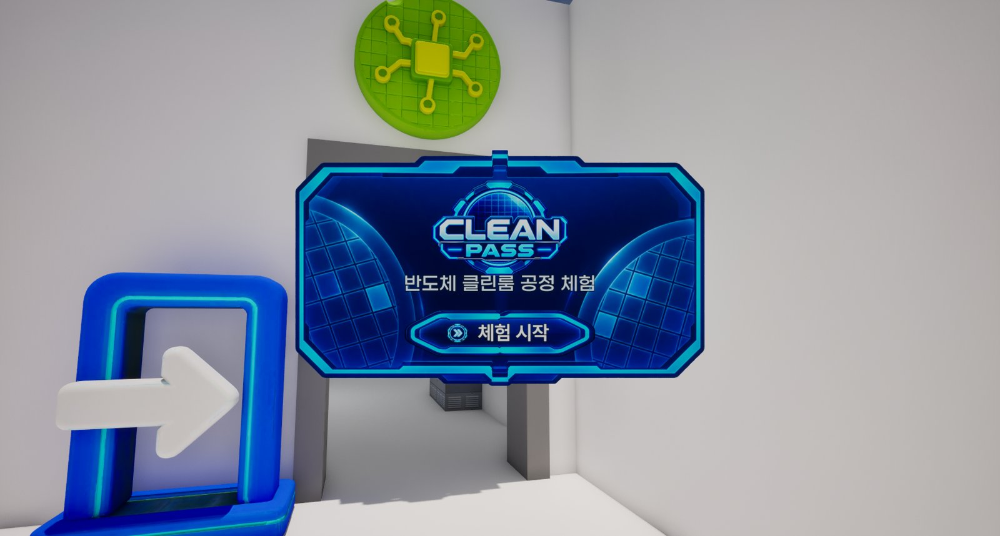
| 항목 | 내용 |
|---|---|
| 프로젝트 | Clean Pass — 반도체 클린룸 공정 VR 체험 교육 콘텐츠 |
| 팀 | 4인 (팀장·UX/UI, 모델링, 기획, 기능 구현) |
| 내 역할 | Unreal Engine 기능 구현 |
| 엔진 | Unreal Engine 5, 블루프린트 |
| 플랫폼 | PC VR (Meta Quest + Link 케이블) |
| 주요 구현 | 포토공정 장비 인터랙션, 에어샤워, 나레이션 진행 잠금, 장비 설명 UI, VR 레이저 조준 |
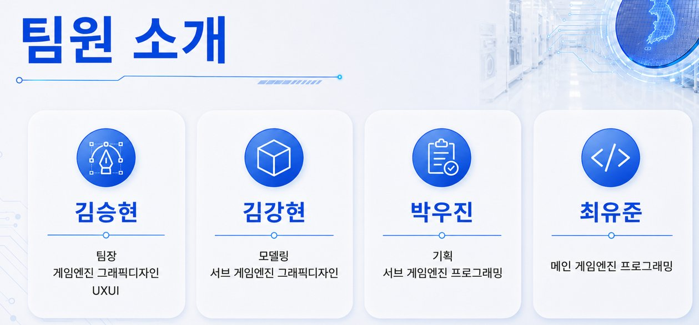
스핀코터·마스크얼라이너·디벨로퍼·베이크 장비를 실제 공정 순서대로 조작하도록 블루프린트로 구현했습니다. ChatGPT에게 방법을 물어가며 노드를 직접 연결했습니다.
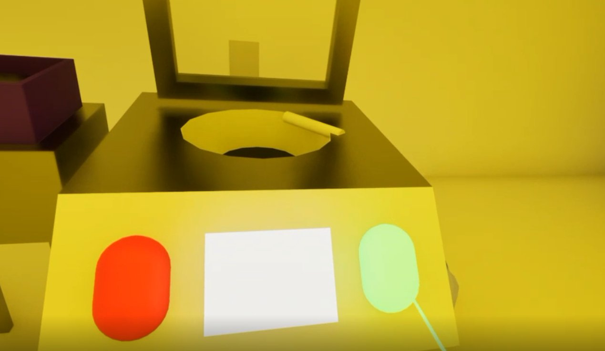
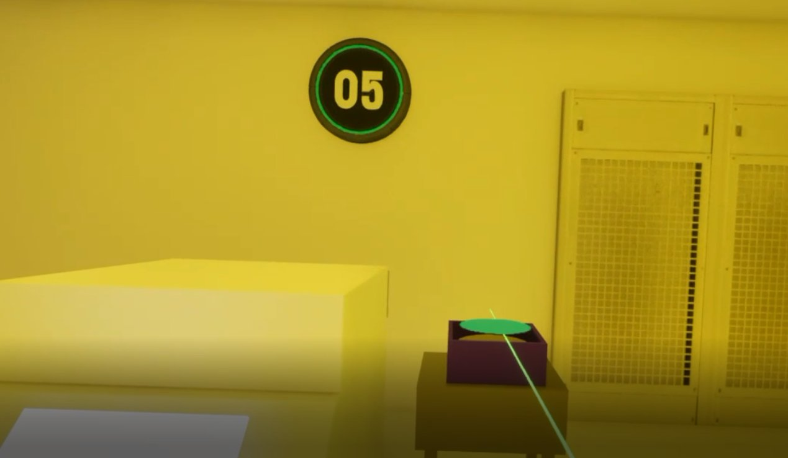
설명을 다 듣기 전에는 다음 버튼을 누를 수 없게 만들었습니다. 교육용 콘텐츠라서, 학생이 버튼만 연달아 눌러 공정을 건너뛰는 것을 막기 위해서입니다.
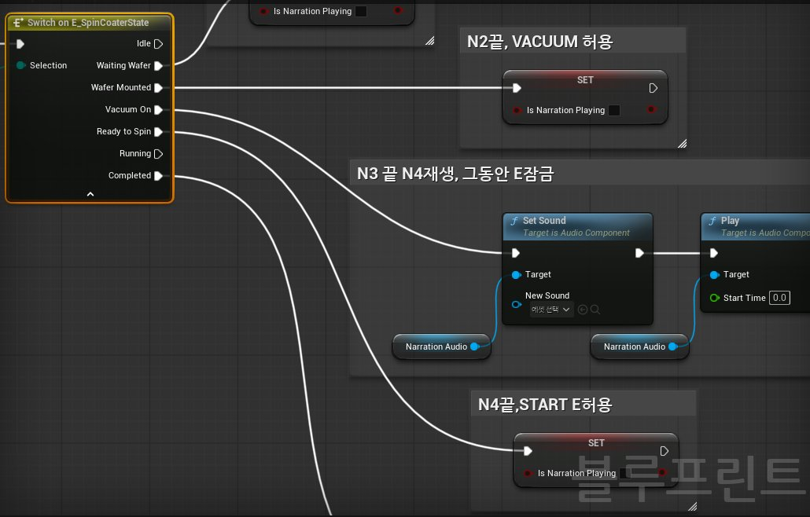
PC에서는 멀쩡하지만 VR 헤드셋에서만 생기는 문제를 직접 플레이하며 찾아냈습니다. 원인을 좁히고 해결 방향을 정한 뒤, 수정은 AI(Claude)와 함께 적용했습니다.
| 문제 (내가 발견) | 원인 | 조치 / 확인 상태 |
|---|---|---|
| 에어샤워에 반대 방향으로 들어가도 문이 열림 (VR에서만) | 문에 바짝 붙은 감지 박스가 VR 손(컨트롤러)까지 감지함 | 감지 박스를 40cm 바깥으로, 몸(Pawn)만 감지 |
| 문에 부딪히면 나레이션이 다시 나옴 | 감지 범위를 벗어났다 들어오며 다시 시작 | 감지 범위 조정 |
| 패널실 버튼이 나레이션 시작하자마자 깜박임 | 소리가 중간에 끊겨도 '끝'으로 처리됨 | 최소 55초 들어야 버튼이 열림 |
| 스핀코터 START 버튼이 초록 버튼 앞에서만 눌림 | 웨이퍼 감지 박스가 START 바로 옆에 붙어 있음 | 위치가 아닌 장비 상태로 판정 + 버튼 감지 범위 확장 |
| 에어샤워에서 에러 10개 발생 | 바람을 보여주려고 넣은 비닐 효과가 원인 | 비닐 효과를 오류 원인으로 식별 |
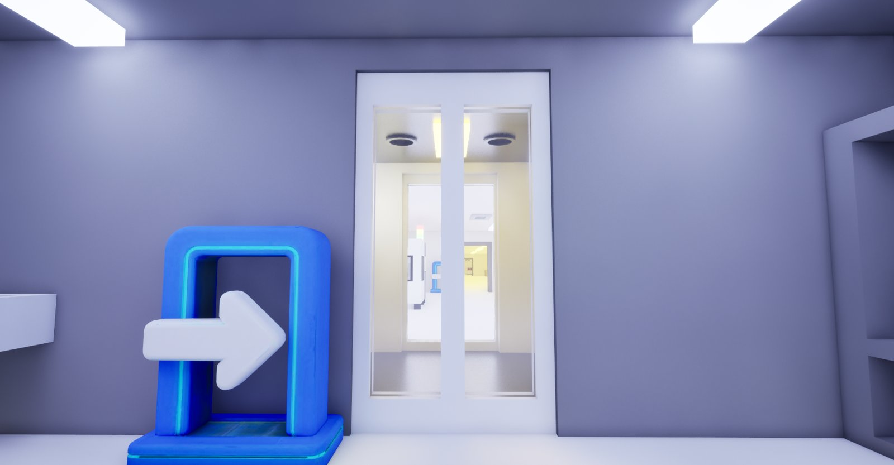
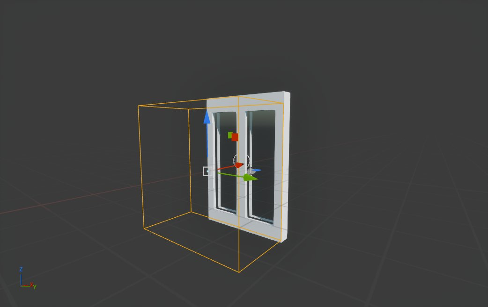
주황색 상자가 문 감지 범위입니다. 문 안쪽이 아니라 들어오는 쪽에만 두어, 안에서 부딪혀도 문이 열리지 않게 했습니다.
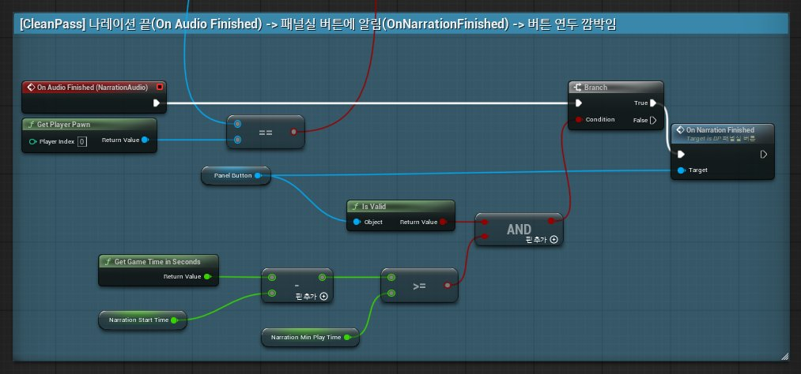
나레이션이 끝났다는 신호가 와도, 실제로 55초 이상 재생됐을 때만 버튼이 깜박이며 문이 열립니다.
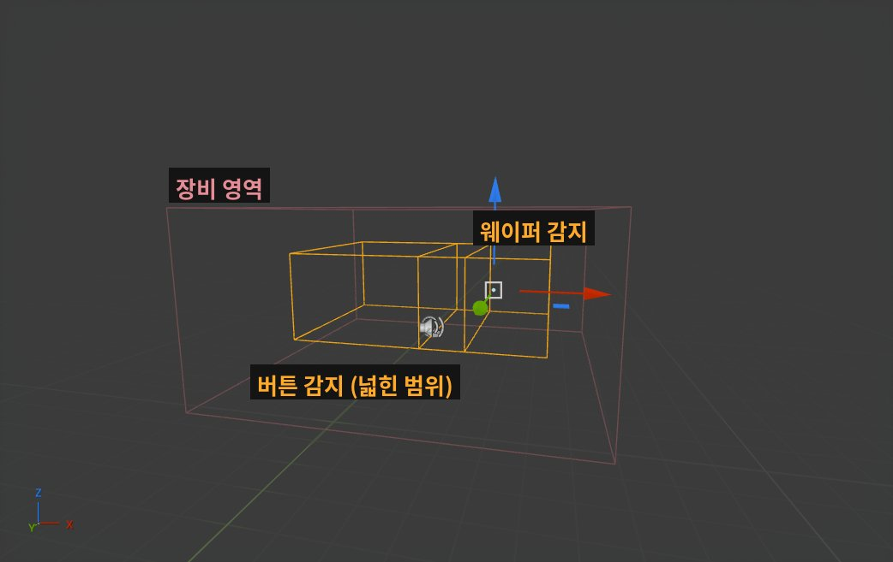
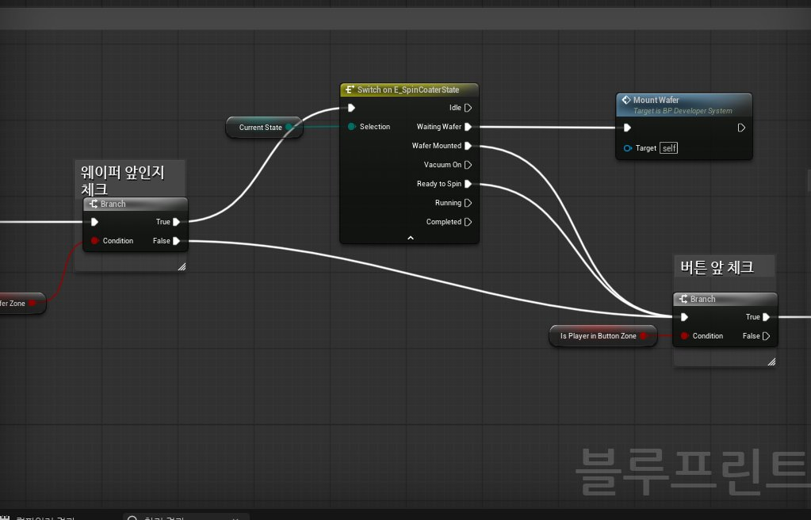
장비 앞에 가면 캐릭터가 설명 글을 손으로 가리키는 설명창이 나타나게 했습니다. "손이 가리키는 쪽에 글이 있어야 한다"는 배치를 제가 정했고, 실마다 다른 포즈의 캐릭터 이미지 3장을 준비했습니다.
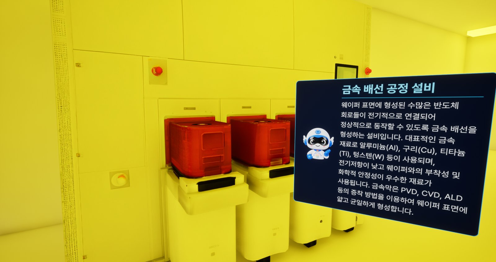
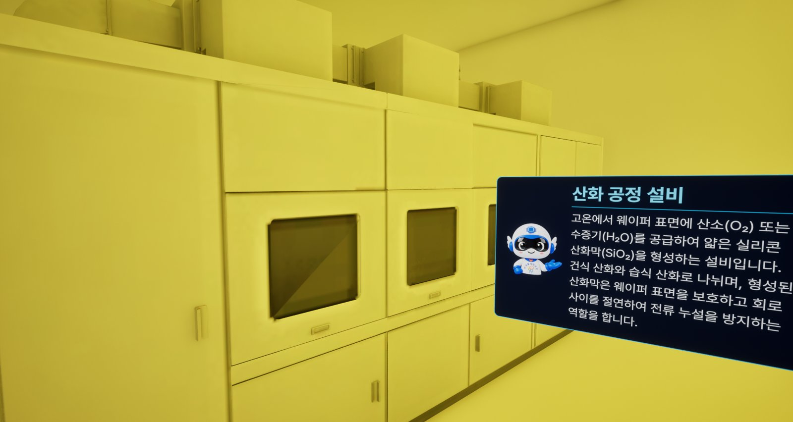
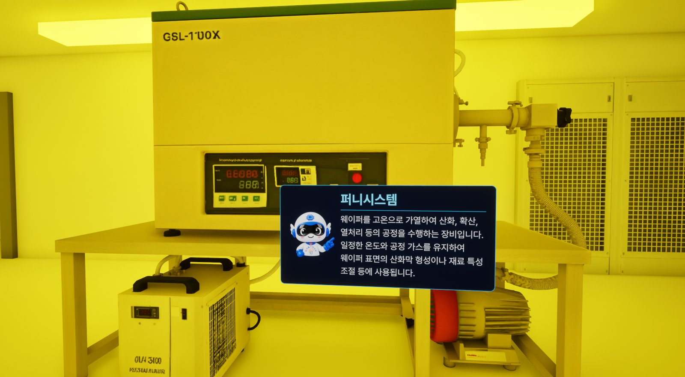
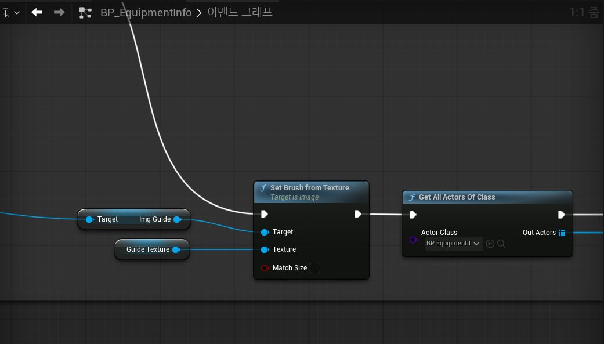
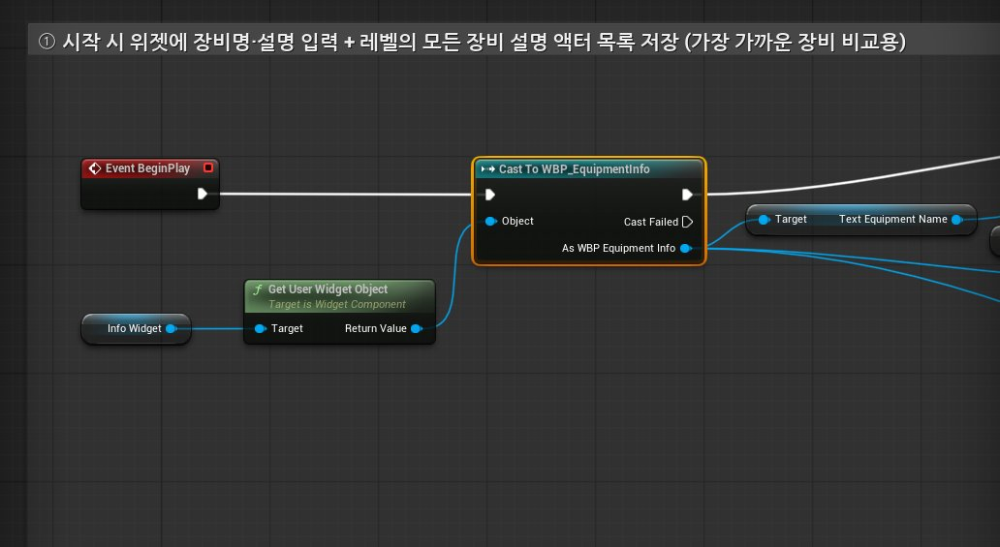
팀이 반도체학과를 직접 방문해 실제 클린룸과 장비를 기록하고, 그 자료로 공간과 공정을 만들었습니다.
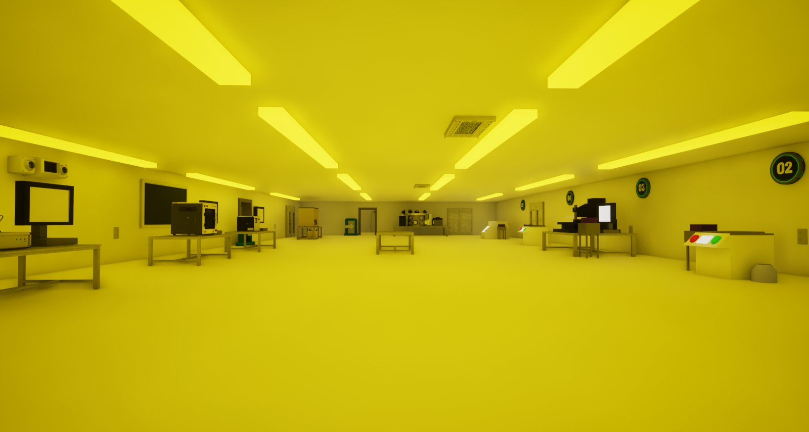
노란 조명은 실제 포토공정 구역의 황색광을 재현한 것입니다. 감광액이 빛에 반응하지 않도록 쓰는 조명입니다.
| 자료 | 출처 |
|---|---|
| 장비·공간 | 반도체학과 방문 (360 카메라, 영상·사진 촬영) |
| 공정 설명 | 반도체학과 교수님 설명, 학과 학생 2명 조언, 반도체학과 출신 기획자 |
| 방진복 | 실제 사진 |
| 캐릭터 | 폴리텍대학 캐릭터 |
| 나레이션 | 무료 AI 음성 |
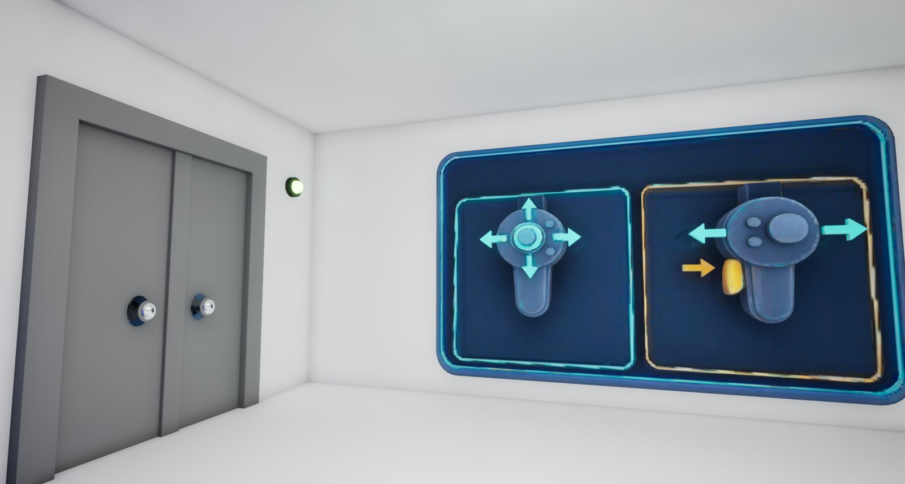
VR이 처음인 학생도 따라올 수 있도록, 첫 방에서 이동과 회전 조작을 먼저 안내합니다.
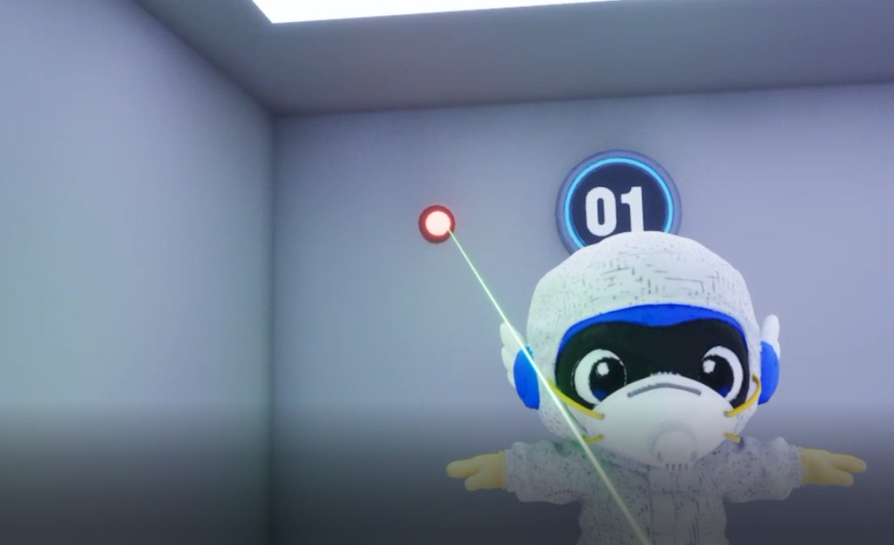
방진복실에서는 방진복을 입은 캐릭터를 보며, 레이저로 버튼을 눌러 다음 단계로 넘어갑니다.
구현은 AI 도구(ChatGPT, Claude)를 적극적으로 썼고, 무엇을 고칠지와 어떻게 고칠지는 제가 정했습니다.
| 제가 한 것 | AI가 도운 것 |
|---|---|
| VR 헤드셋으로 직접 플레이하며 문제 발견 | 블루프린트 노드 연결과 수정 |
| 해결 방향 결정, 고치기 전 상황 분석을 먼저 요청 | 원인 분석 자료 정리 |
| 수정 후 재테스트, 효과 없는 변경은 되돌리기 | 백업과 변경 내역 비교 |
[CleanPass] 주석을 단다.